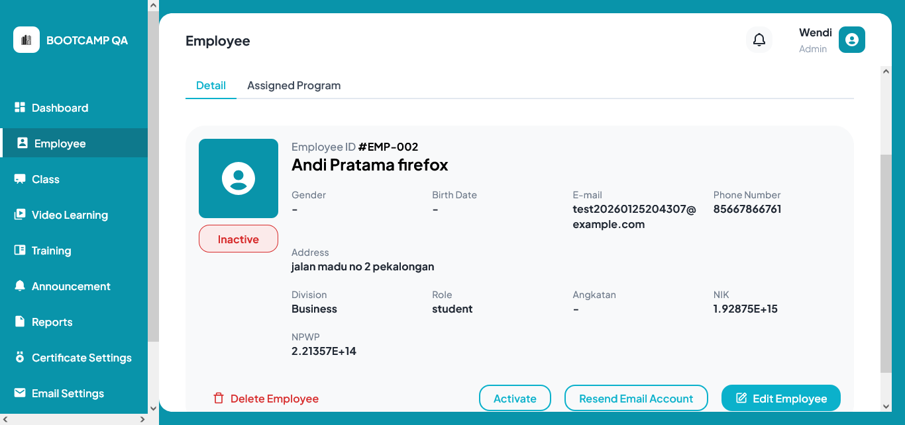

-
activateAccountEmployee
12:09:08 AM / 00:00:00:061 Skip
activateAccountEmployee
01.18.2026 12:09:08 AM 01.18.2026 12:09:08 AM 00:00:00:061 · #test-id=1chromeStatus Timestamp Details Info 12:09:08 AM Test started Skip 12:09:08 AM Test Skipped: org.openqa.selenium.remote.NoSuchDriverException: Unable to obtain: Capabilities {browserName: chrome, goog:chromeOptions: {args: [--remote-allow-origins=*], extensions: [], prefs: {download.default_directory: C:\Users\LENOVO\Documents\B...}}} -
activateAccountEmployee
12:09:11 AM / 00:00:22:947 Fail
activateAccountEmployee
01.18.2026 12:09:11 AM 01.18.2026 12:09:34 AM 00:00:22:947 · #test-id=2edgeStatus Timestamp Details Info 12:09:11 AM Test started Fail 12:09:34 AM Fail 12:09:34 AM  -
assignedEmployeeToTrainingTest
12:09:13 AM / 00:00:00:003 Skip
assignedEmployeeToTrainingTest
01.18.2026 12:09:13 AM 01.18.2026 12:09:13 AM 00:00:00:003 · #test-id=3chromeStatus Timestamp Details Info 12:09:13 AM Test started Skip 12:09:13 AM Test Skipped: org.openqa.selenium.remote.NoSuchDriverException: Unable to obtain: Capabilities {browserName: chrome, goog:chromeOptions: {args: [--remote-allow-origins=*], extensions: [], prefs: {download.default_directory: C:\Users\LENOVO\Documents\B...}}} -
inactivateAccountEmployee
12:09:13 AM / 00:00:00:001 Skip
inactivateAccountEmployee
01.18.2026 12:09:13 AM 01.18.2026 12:09:13 AM 00:00:00:001 · #test-id=4chromeStatus Timestamp Details Info 12:09:13 AM Test started Skip 12:09:13 AM Test Skipped: org.openqa.selenium.remote.NoSuchDriverException: Unable to obtain: Capabilities {browserName: chrome, goog:chromeOptions: {args: [--remote-allow-origins=*], extensions: [], prefs: {download.default_directory: C:\Users\LENOVO\Documents\B...}}} -
invalidEmptyEmailAndPasswordTest
12:09:17 AM / 00:00:00:001 Skip
invalidEmptyEmailAndPasswordTest
01.18.2026 12:09:17 AM 01.18.2026 12:09:17 AM 00:00:00:001 · #test-id=5chromeStatus Timestamp Details Info 12:09:17 AM Test started Skip 12:09:17 AM Test Skipped: org.openqa.selenium.remote.NoSuchDriverException: Unable to obtain: Capabilities {browserName: chrome, goog:chromeOptions: {args: [--remote-allow-origins=*], extensions: [], prefs: {download.default_directory: C:\Users\LENOVO\Documents\B...}}} -
loginInvalidEmailTest
12:09:17 AM / 00:00:00:006 Skip
loginInvalidEmailTest
01.18.2026 12:09:17 AM 01.18.2026 12:09:17 AM 00:00:00:006 · #test-id=6chromeStatus Timestamp Details Info 12:09:17 AM Test started Skip 12:09:17 AM Test Skipped: org.openqa.selenium.remote.NoSuchDriverException: Unable to obtain: Capabilities {browserName: chrome, goog:chromeOptions: {args: [--remote-allow-origins=*], extensions: [], prefs: {download.default_directory: C:\Users\LENOVO\Documents\B...}}} -
loginInvalidPasswordTest
12:09:17 AM / 00:00:00:001 Skip
loginInvalidPasswordTest
01.18.2026 12:09:17 AM 01.18.2026 12:09:17 AM 00:00:00:001 · #test-id=7chromeStatus Timestamp Details Info 12:09:17 AM Test started Skip 12:09:17 AM Test Skipped: org.openqa.selenium.remote.NoSuchDriverException: Unable to obtain: Capabilities {browserName: chrome, goog:chromeOptions: {args: [--remote-allow-origins=*], extensions: [], prefs: {download.default_directory: C:\Users\LENOVO\Documents\B...}}} -
loginValidCredentialTest
12:09:17 AM / 00:00:00:001 Skip
loginValidCredentialTest
01.18.2026 12:09:17 AM 01.18.2026 12:09:17 AM 00:00:00:001 · #test-id=8chromeStatus Timestamp Details Info 12:09:17 AM Test started Skip 12:09:17 AM Test Skipped: org.openqa.selenium.remote.NoSuchDriverException: Unable to obtain: Capabilities {browserName: chrome, goog:chromeOptions: {args: [--remote-allow-origins=*], extensions: [], prefs: {download.default_directory: C:\Users\LENOVO\Documents\B...}}} -
verifyAssignEmployeeWithoutSelectEmployeeTest
12:09:17 AM / 00:00:00:000 Skip
verifyAssignEmployeeWithoutSelectEmployeeTest
01.18.2026 12:09:17 AM 01.18.2026 12:09:17 AM 00:00:00:000 · #test-id=9chromeStatus Timestamp Details Info 12:09:17 AM Test started Skip 12:09:17 AM Test Skipped: org.openqa.selenium.remote.NoSuchDriverException: Unable to obtain: Capabilities {browserName: chrome, goog:chromeOptions: {args: [--remote-allow-origins=*], extensions: [], prefs: {download.default_directory: C:\Users\LENOVO\Documents\B...}}} -
verifyAssignedProgramTest
12:09:17 AM / 00:00:00:000 Skip
verifyAssignedProgramTest
01.18.2026 12:09:17 AM 01.18.2026 12:09:17 AM 00:00:00:000 · #test-id=10chromeStatus Timestamp Details Info 12:09:17 AM Test started Skip 12:09:17 AM Test Skipped: org.openqa.selenium.remote.NoSuchDriverException: Unable to obtain: Capabilities {browserName: chrome, goog:chromeOptions: {args: [--remote-allow-origins=*], extensions: [], prefs: {download.default_directory: C:\Users\LENOVO\Documents\B...}}} -
verifyCancelButtonTranfer
12:09:17 AM / 00:00:00:002 Skip
verifyCancelButtonTranfer
01.18.2026 12:09:17 AM 01.18.2026 12:09:17 AM 00:00:00:002 · #test-id=11chromeStatus Timestamp Details Info 12:09:17 AM Test started Skip 12:09:17 AM Test Skipped: org.openqa.selenium.remote.NoSuchDriverException: Unable to obtain: Capabilities {browserName: chrome, goog:chromeOptions: {args: [--remote-allow-origins=*], extensions: [], prefs: {download.default_directory: C:\Users\LENOVO\Documents\B...}}} -
verifyCancelEmployeeTest
12:09:17 AM / 00:00:00:002 Skip
verifyCancelEmployeeTest
01.18.2026 12:09:17 AM 01.18.2026 12:09:17 AM 00:00:00:002 · #test-id=12chromeStatus Timestamp Details Info 12:09:17 AM Test started Skip 12:09:17 AM Test Skipped: org.openqa.selenium.remote.NoSuchDriverException: Unable to obtain: Capabilities {browserName: chrome, goog:chromeOptions: {args: [--remote-allow-origins=*], extensions: [], prefs: {download.default_directory: C:\Users\LENOVO\Documents\B...}}} -
verifyDownloadEmployeeListTest
12:09:17 AM / 00:00:00:001 Skip
verifyDownloadEmployeeListTest
01.18.2026 12:09:17 AM 01.18.2026 12:09:17 AM 00:00:00:001 · #test-id=13chromeStatus Timestamp Details Info 12:09:17 AM Test started Skip 12:09:17 AM Test Skipped: org.openqa.selenium.remote.NoSuchDriverException: Unable to obtain: Capabilities {browserName: chrome, goog:chromeOptions: {args: [--remote-allow-origins=*], extensions: [], prefs: {download.default_directory: C:\Users\LENOVO\Documents\B...}}} -
verifyExportCsvDivisionTest
12:09:21 AM / 00:00:00:001 Skip
verifyExportCsvDivisionTest
01.18.2026 12:09:21 AM 01.18.2026 12:09:21 AM 00:00:00:001 · #test-id=14chromeStatus Timestamp Details Info 12:09:21 AM Test started Skip 12:09:21 AM Test Skipped: org.openqa.selenium.remote.NoSuchDriverException: Unable to obtain: Capabilities {browserName: chrome, goog:chromeOptions: {args: [--remote-allow-origins=*], extensions: [], prefs: {download.default_directory: C:\Users\LENOVO\Documents\B...}}} -
verifyFilterByBatchTest
12:09:21 AM / 00:00:00:001 Skip
verifyFilterByBatchTest
01.18.2026 12:09:21 AM 01.18.2026 12:09:21 AM 00:00:00:001 · #test-id=15chromeStatus Timestamp Details Info 12:09:21 AM Test started Skip 12:09:21 AM Test Skipped: org.openqa.selenium.remote.NoSuchDriverException: Unable to obtain: Capabilities {browserName: chrome, goog:chromeOptions: {args: [--remote-allow-origins=*], extensions: [], prefs: {download.default_directory: C:\Users\LENOVO\Documents\B...}}} -
verifyImportEmployeeTest
12:09:21 AM / 00:00:00:001 Skip
verifyImportEmployeeTest
01.18.2026 12:09:21 AM 01.18.2026 12:09:21 AM 00:00:00:001 · #test-id=16chromeStatus Timestamp Details Info 12:09:21 AM Test started Skip 12:09:21 AM Test Skipped: org.openqa.selenium.remote.NoSuchDriverException: Unable to obtain: Capabilities {browserName: chrome, goog:chromeOptions: {args: [--remote-allow-origins=*], extensions: [], prefs: {download.default_directory: C:\Users\LENOVO\Documents\B...}}} -
verifyResendEmailAccount
12:09:21 AM / 00:00:00:001 Skip
verifyResendEmailAccount
01.18.2026 12:09:21 AM 01.18.2026 12:09:21 AM 00:00:00:001 · #test-id=17chromeStatus Timestamp Details Info 12:09:21 AM Test started Skip 12:09:21 AM Test Skipped: org.openqa.selenium.remote.NoSuchDriverException: Unable to obtain: Capabilities {browserName: chrome, goog:chromeOptions: {args: [--remote-allow-origins=*], extensions: [], prefs: {download.default_directory: C:\Users\LENOVO\Documents\B...}}} -
verifySearchEmployeeTest
12:09:25 AM / 00:00:00:000 Skip
verifySearchEmployeeTest
01.18.2026 12:09:25 AM 01.18.2026 12:09:25 AM 00:00:00:000 · #test-id=18chromeStatus Timestamp Details Info 12:09:25 AM Test started Skip 12:09:25 AM Test Skipped: org.openqa.selenium.remote.NoSuchDriverException: Unable to obtain: Capabilities {browserName: chrome, goog:chromeOptions: {args: [--remote-allow-origins=*], extensions: [], prefs: {download.default_directory: C:\Users\LENOVO\Documents\B...}}} -
verifySearchEmployeeTest
12:09:25 AM / 00:00:00:009 Skip
verifySearchEmployeeTest
01.18.2026 12:09:25 AM 01.18.2026 12:09:25 AM 00:00:00:009 · #test-id=19chromeStatus Timestamp Details Info 12:09:25 AM Test started Skip 12:09:25 AM Test Skipped: org.openqa.selenium.remote.NoSuchDriverException: Unable to obtain: Capabilities {browserName: chrome, goog:chromeOptions: {args: [--remote-allow-origins=*], extensions: [], prefs: {download.default_directory: C:\Users\LENOVO\Documents\B...}}} -
verifySearchEmployeeTest
12:09:25 AM / 00:00:00:002 Skip
verifySearchEmployeeTest
01.18.2026 12:09:25 AM 01.18.2026 12:09:25 AM 00:00:00:002 · #test-id=20chromeStatus Timestamp Details Info 12:09:25 AM Test started Skip 12:09:25 AM Test Skipped: org.openqa.selenium.remote.NoSuchDriverException: Unable to obtain: Capabilities {browserName: chrome, goog:chromeOptions: {args: [--remote-allow-origins=*], extensions: [], prefs: {download.default_directory: C:\Users\LENOVO\Documents\B...}}} -
verifySearchEmployeeTest
12:09:25 AM / 00:00:00:001 Skip
verifySearchEmployeeTest
01.18.2026 12:09:25 AM 01.18.2026 12:09:25 AM 00:00:00:001 · #test-id=21chromeStatus Timestamp Details Info 12:09:25 AM Test started Skip 12:09:25 AM Test Skipped: org.openqa.selenium.remote.NoSuchDriverException: Unable to obtain: Capabilities {browserName: chrome, goog:chromeOptions: {args: [--remote-allow-origins=*], extensions: [], prefs: {download.default_directory: C:\Users\LENOVO\Documents\B...}}} -
verifyStartdatelaterThanDealineDateTest
12:09:25 AM / 00:00:00:119 Skip
verifyStartdatelaterThanDealineDateTest
01.18.2026 12:09:25 AM 01.18.2026 12:09:25 AM 00:00:00:119 · #test-id=22chromeStatus Timestamp Details Info 12:09:25 AM Test started Skip 12:09:25 AM Test Skipped: org.openqa.selenium.remote.NoSuchDriverException: Unable to obtain: Capabilities {browserName: chrome, goog:chromeOptions: {args: [--remote-allow-origins=*], extensions: [], prefs: {download.default_directory: C:\Users\LENOVO\Documents\B...}}} -
verifyTranferEmployeeTest
12:09:26 AM / 00:00:00:009 Skip
verifyTranferEmployeeTest
01.18.2026 12:09:26 AM 01.18.2026 12:09:26 AM 00:00:00:009 · #test-id=23chromeStatus Timestamp Details Info 12:09:26 AM Test started Skip 12:09:26 AM Test Skipped: org.openqa.selenium.remote.NoSuchDriverException: Unable to obtain: Capabilities {browserName: chrome, goog:chromeOptions: {args: [--remote-allow-origins=*], extensions: [], prefs: {download.default_directory: C:\Users\LENOVO\Documents\B...}}} -
AddTrainingTest
12:09:27 AM / 00:00:00:000 Skip
AddTrainingTest
01.18.2026 12:09:27 AM 01.18.2026 12:09:27 AM 00:00:00:000 · #test-id=24chromeStatus Timestamp Details Info 12:09:27 AM Test started Skip 12:09:27 AM Test Skipped: org.openqa.selenium.remote.NoSuchDriverException: Unable to obtain: Capabilities {browserName: chrome, goog:chromeOptions: {args: [--remote-allow-origins=*], extensions: [], prefs: {download.default_directory: C:\Users\LENOVO\Documents\B...}}} -
activateAccountEmployee
12:09:29 AM / 00:00:18:704 Fail
activateAccountEmployee
01.18.2026 12:09:29 AM 01.18.2026 12:09:48 AM 00:00:18:704 · #test-id=25firefoxStatus Timestamp Details Info 12:09:29 AM Test started Fail 12:09:48 AM Assertion Error Detail: Fail 12:09:48 AM Expected Succes activate employee account Actual N/A Fail 12:09:48 AM -
DeleteContentFromChapterTest
12:09:34 AM / 00:00:00:002 Skip
DeleteContentFromChapterTest
01.18.2026 12:09:34 AM 01.18.2026 12:09:34 AM 00:00:00:002 · #test-id=26chromeStatus Timestamp Details Info 12:09:34 AM Test started Skip 12:09:34 AM Test Skipped: org.openqa.selenium.remote.NoSuchDriverException: Unable to obtain: Capabilities {browserName: chrome, goog:chromeOptions: {args: [--remote-allow-origins=*], extensions: [], prefs: {download.default_directory: C:\Users\LENOVO\Documents\B...}}} -
addChapterTest
12:09:44 AM / 00:00:00:005 Skip
addChapterTest
01.18.2026 12:09:44 AM 01.18.2026 12:09:44 AM 00:00:00:005 · #test-id=27chromeStatus Timestamp Details Info 12:09:44 AM Test started Skip 12:09:44 AM Test Skipped: org.openqa.selenium.remote.NoSuchDriverException: Unable to obtain: Capabilities {browserName: chrome, goog:chromeOptions: {args: [--remote-allow-origins=*], extensions: [], prefs: {download.default_directory: C:\Users\LENOVO\Documents\B...}}} -
addContentWithVideoTest
12:09:48 AM / 00:00:00:007 Skip
addContentWithVideoTest
01.18.2026 12:09:48 AM 01.18.2026 12:09:48 AM 00:00:00:007 · #test-id=28chromeStatus Timestamp Details Info 12:09:48 AM Test started Skip 12:09:48 AM Test Skipped: org.openqa.selenium.remote.NoSuchDriverException: Unable to obtain: Capabilities {browserName: chrome, goog:chromeOptions: {args: [--remote-allow-origins=*], extensions: [], prefs: {download.default_directory: C:\Users\LENOVO\Documents\B...}}} -
verifyAddEmployeeTest
12:09:49 AM / 00:00:00:008 Skip
verifyAddEmployeeTest
01.18.2026 12:09:49 AM 01.18.2026 12:09:49 AM 00:00:00:008 · #test-id=29chromeStatus Timestamp Details Info 12:09:49 AM Test started Skip 12:09:49 AM Test Skipped: org.openqa.selenium.remote.NoSuchDriverException: Unable to obtain: Capabilities {browserName: chrome, goog:chromeOptions: {args: [--remote-allow-origins=*], extensions: [], prefs: {download.default_directory: C:\Users\LENOVO\Documents\B...}}} -
verifySwitchingDivisionTest
12:09:49 AM / 00:00:00:002 Skip
verifySwitchingDivisionTest
01.18.2026 12:09:49 AM 01.18.2026 12:09:49 AM 00:00:00:002 · #test-id=30chromeStatus Timestamp Details Info 12:09:49 AM Test started Skip 12:09:49 AM Test Skipped: org.openqa.selenium.remote.NoSuchDriverException: Unable to obtain: Capabilities {browserName: chrome, goog:chromeOptions: {args: [--remote-allow-origins=*], extensions: [], prefs: {download.default_directory: C:\Users\LENOVO\Documents\B...}}} -
addContentWithArticleTest
12:09:50 AM / 00:00:00:007 Skip
addContentWithArticleTest
01.18.2026 12:09:50 AM 01.18.2026 12:09:50 AM 00:00:00:007 · #test-id=31chromeStatus Timestamp Details Info 12:09:50 AM Test started Skip 12:09:50 AM Test Skipped: org.openqa.selenium.remote.NoSuchDriverException: Unable to obtain: Capabilities {browserName: chrome, goog:chromeOptions: {args: [--remote-allow-origins=*], extensions: [], prefs: {download.default_directory: C:\Users\LENOVO\Documents\B...}}} -
editChapterTest
12:09:51 AM / 00:00:00:000 Skip
editChapterTest
01.18.2026 12:09:51 AM 01.18.2026 12:09:51 AM 00:00:00:000 · #test-id=32chromeStatus Timestamp Details Info 12:09:51 AM Test started Skip 12:09:51 AM Test Skipped: org.openqa.selenium.remote.NoSuchDriverException: Unable to obtain: Capabilities {browserName: chrome, goog:chromeOptions: {args: [--remote-allow-origins=*], extensions: [], prefs: {download.default_directory: C:\Users\LENOVO\Documents\B...}}} -
editTrainingTest
12:09:52 AM / 00:00:00:000 Skip
editTrainingTest
01.18.2026 12:09:52 AM 01.18.2026 12:09:52 AM 00:00:00:000 · #test-id=33chromeStatus Timestamp Details Info 12:09:52 AM Test started Skip 12:09:52 AM Test Skipped: org.openqa.selenium.remote.NoSuchDriverException: Unable to obtain: Capabilities {browserName: chrome, goog:chromeOptions: {args: [--remote-allow-origins=*], extensions: [], prefs: {download.default_directory: C:\Users\LENOVO\Documents\B...}}} -
verifyAddDivisionTest
12:09:52 AM / 00:00:00:000 Skip
verifyAddDivisionTest
01.18.2026 12:09:52 AM 01.18.2026 12:09:52 AM 00:00:00:000 · #test-id=34chromeStatus Timestamp Details Info 12:09:52 AM Test started Skip 12:09:52 AM Test Skipped: org.openqa.selenium.remote.NoSuchDriverException: Unable to obtain: Capabilities {browserName: chrome, goog:chromeOptions: {args: [--remote-allow-origins=*], extensions: [], prefs: {download.default_directory: C:\Users\LENOVO\Documents\B...}}} -
verifyAddEmployeeWithEmptyFieldsTest
12:09:52 AM / 00:00:00:001 Skip
verifyAddEmployeeWithEmptyFieldsTest
01.18.2026 12:09:52 AM 01.18.2026 12:09:52 AM 00:00:00:001 · #test-id=35chromeStatus Timestamp Details Info 12:09:52 AM Test started Skip 12:09:52 AM Test Skipped: org.openqa.selenium.remote.NoSuchDriverException: Unable to obtain: Capabilities {browserName: chrome, goog:chromeOptions: {args: [--remote-allow-origins=*], extensions: [], prefs: {download.default_directory: C:\Users\LENOVO\Documents\B...}}} -
verifyDeleteEmployeeSuccess
12:09:52 AM / 00:00:00:000 Skip
verifyDeleteEmployeeSuccess
01.18.2026 12:09:52 AM 01.18.2026 12:09:52 AM 00:00:00:000 · #test-id=36chromeStatus Timestamp Details Info 12:09:52 AM Test started Skip 12:09:52 AM Test Skipped: org.openqa.selenium.remote.NoSuchDriverException: Unable to obtain: Capabilities {browserName: chrome, goog:chromeOptions: {args: [--remote-allow-origins=*], extensions: [], prefs: {download.default_directory: C:\Users\LENOVO\Documents\B...}}} -
addChapterTest
12:09:53 AM / 00:00:00:001 Skip
addChapterTest
01.18.2026 12:09:53 AM 01.18.2026 12:09:53 AM 00:00:00:001 · #test-id=37chromeStatus Timestamp Details Info 12:09:53 AM Test started Skip 12:09:53 AM Test Skipped: org.openqa.selenium.remote.NoSuchDriverException: Unable to obtain: Capabilities {browserName: chrome, goog:chromeOptions: {args: [--remote-allow-origins=*], extensions: [], prefs: {download.default_directory: C:\Users\LENOVO\Documents\B...}}} -
addContentWithTestTypeTest
12:09:53 AM / 00:00:00:001 Skip
addContentWithTestTypeTest
01.18.2026 12:09:53 AM 01.18.2026 12:09:53 AM 00:00:00:001 · #test-id=38chromeStatus Timestamp Details Info 12:09:53 AM Test started Skip 12:09:53 AM Test Skipped: org.openqa.selenium.remote.NoSuchDriverException: Unable to obtain: Capabilities {browserName: chrome, goog:chromeOptions: {args: [--remote-allow-origins=*], extensions: [], prefs: {download.default_directory: C:\Users\LENOVO\Documents\B...}}} -
editDivisionValidTest
12:09:54 AM / 00:00:00:005 Skip
editDivisionValidTest
01.18.2026 12:09:54 AM 01.18.2026 12:09:54 AM 00:00:00:005 · #test-id=39chromeStatus Timestamp Details Info 12:09:54 AM Test started Skip 12:09:54 AM Test Skipped: org.openqa.selenium.remote.NoSuchDriverException: Unable to obtain: Capabilities {browserName: chrome, goog:chromeOptions: {args: [--remote-allow-origins=*], extensions: [], prefs: {download.default_directory: C:\Users\LENOVO\Documents\B...}}} -
verifyDeleteDivisionTest
12:09:54 AM / 00:00:00:000 Skip
verifyDeleteDivisionTest
01.18.2026 12:09:54 AM 01.18.2026 12:09:54 AM 00:00:00:000 · #test-id=40chromeStatus Timestamp Details Info 12:09:54 AM Test started Skip 12:09:54 AM Test Skipped: org.openqa.selenium.remote.NoSuchDriverException: Unable to obtain: Capabilities {browserName: chrome, goog:chromeOptions: {args: [--remote-allow-origins=*], extensions: [], prefs: {download.default_directory: C:\Users\LENOVO\Documents\B...}}} -
verifyEditEmployeeTest
12:09:54 AM / 00:00:00:001 Skip
verifyEditEmployeeTest
01.18.2026 12:09:54 AM 01.18.2026 12:09:54 AM 00:00:00:001 · #test-id=41chromeStatus Timestamp Details Info 12:09:54 AM Test started Skip 12:09:54 AM Test Skipped: org.openqa.selenium.remote.NoSuchDriverException: Unable to obtain: Capabilities {browserName: chrome, goog:chromeOptions: {args: [--remote-allow-origins=*], extensions: [], prefs: {download.default_directory: C:\Users\LENOVO\Documents\B...}}} -
editChapterTest
12:09:54 AM / 00:00:00:000 Skip
editChapterTest
01.18.2026 12:09:54 AM 01.18.2026 12:09:54 AM 00:00:00:000 · #test-id=42chromeStatus Timestamp Details Info 12:09:54 AM Test started Skip 12:09:54 AM Test Skipped: org.openqa.selenium.remote.NoSuchDriverException: Unable to obtain: Capabilities {browserName: chrome, goog:chromeOptions: {args: [--remote-allow-origins=*], extensions: [], prefs: {download.default_directory: C:\Users\LENOVO\Documents\B...}}} -
editContentVideoTest
12:09:55 AM / 00:00:00:000 Skip
editContentVideoTest
01.18.2026 12:09:55 AM 01.18.2026 12:09:55 AM 00:00:00:000 · #test-id=43chromeStatus Timestamp Details Info 12:09:55 AM Test started Skip 12:09:55 AM Test Skipped: org.openqa.selenium.remote.NoSuchDriverException: Unable to obtain: Capabilities {browserName: chrome, goog:chromeOptions: {args: [--remote-allow-origins=*], extensions: [], prefs: {download.default_directory: C:\Users\LENOVO\Documents\B...}}} -
editContentArticleTest
12:09:55 AM / 00:00:00:000 Skip
editContentArticleTest
01.18.2026 12:09:55 AM 01.18.2026 12:09:55 AM 00:00:00:000 · #test-id=44chromeStatus Timestamp Details Info 12:09:55 AM Test started Skip 12:09:55 AM Test Skipped: org.openqa.selenium.remote.NoSuchDriverException: Unable to obtain: Capabilities {browserName: chrome, goog:chromeOptions: {args: [--remote-allow-origins=*], extensions: [], prefs: {download.default_directory: C:\Users\LENOVO\Documents\B...}}} -
editContentTestTypeTest
12:09:55 AM / 00:00:00:005 Skip
editContentTestTypeTest
01.18.2026 12:09:55 AM 01.18.2026 12:09:55 AM 00:00:00:005 · #test-id=45chromeStatus Timestamp Details Info 12:09:55 AM Test started Skip 12:09:55 AM Test Skipped: org.openqa.selenium.remote.NoSuchDriverException: Unable to obtain: Capabilities {browserName: chrome, goog:chromeOptions: {args: [--remote-allow-origins=*], extensions: [], prefs: {download.default_directory: C:\Users\LENOVO\Documents\B...}}} -
addQuestionTest
12:09:56 AM / 00:00:00:000 Skip
addQuestionTest
01.18.2026 12:09:56 AM 01.18.2026 12:09:56 AM 00:00:00:000 · #test-id=46chromeStatus Timestamp Details Info 12:09:56 AM Test started Skip 12:09:56 AM Test Skipped: org.openqa.selenium.remote.NoSuchDriverException: Unable to obtain: Capabilities {browserName: chrome, goog:chromeOptions: {args: [--remote-allow-origins=*], extensions: [], prefs: {download.default_directory: C:\Users\LENOVO\Documents\B...}}} -
deleteQuestionTest
12:09:56 AM / 00:00:00:000 Skip
deleteQuestionTest
01.18.2026 12:09:56 AM 01.18.2026 12:09:56 AM 00:00:00:000 · #test-id=47chromeStatus Timestamp Details Info 12:09:56 AM Test started Skip 12:09:56 AM Test Skipped: org.openqa.selenium.remote.NoSuchDriverException: Unable to obtain: Capabilities {browserName: chrome, goog:chromeOptions: {args: [--remote-allow-origins=*], extensions: [], prefs: {download.default_directory: C:\Users\LENOVO\Documents\B...}}}
-
org.openqa.selenium.NoSuchElementException
1 tests
org.openqa.selenium.NoSuchElementException
1 failedStatus Timestamp TestName Fail 00:09:11 AM activateAccountEmployee
-
chrome
45 tests
chrome
45 skipped -
edge
1 tests
edge
1 failedStatus Timestamp TestName Fail 00:09:11 AM activateAccountEmployee -
firefox
1 tests
firefox
1 failedStatus Timestamp TestName Fail 00:09:29 AM activateAccountEmployee
Started
18 Jan 2026 00:08:59
Ended
18 Jan 2026 00:09:56
Tests Passed
0
Tests Failed
2
Tests
Log events
Timeline
Tags
| Name | Passed | Failed | Skipped | Others | Passed % |
|---|---|---|---|---|---|
| chrome | 0 | 0 | 45 | 0 | 0% |
| edge | 0 | 1 | 0 | 0 | 0% |
| firefox | 0 | 1 | 0 | 0 | 0% |
System/Environment
| Name | Value |
|---|---|
| Tester | Ahmad Farichin |
| Tool | Selenium WebDriver |
| Framework | TestNG |
| OS | Windows 10 |
| Java | 17.0.12 |